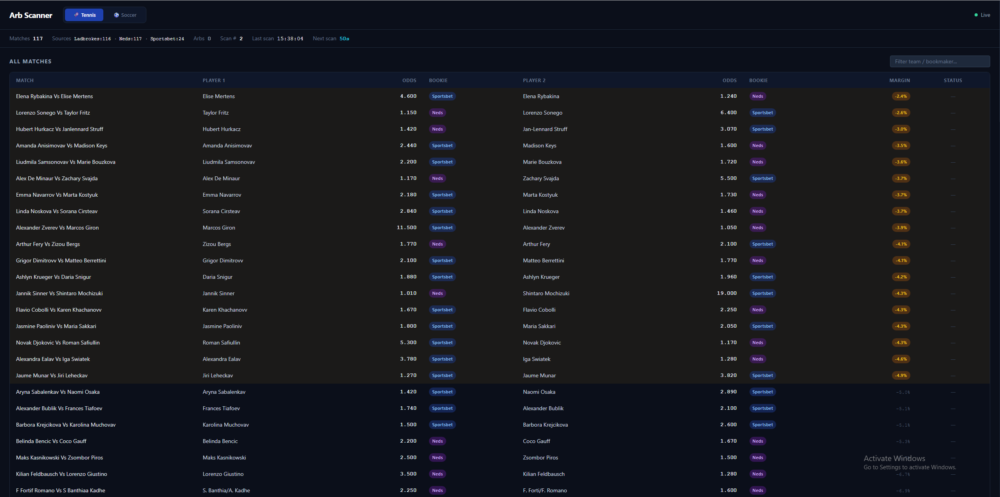
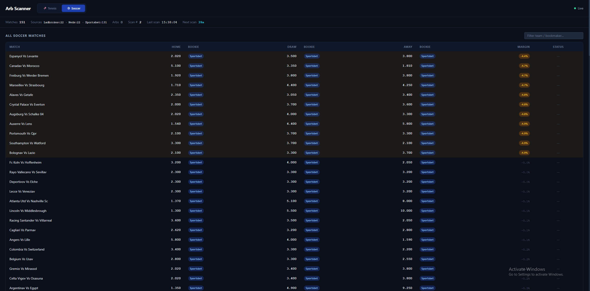
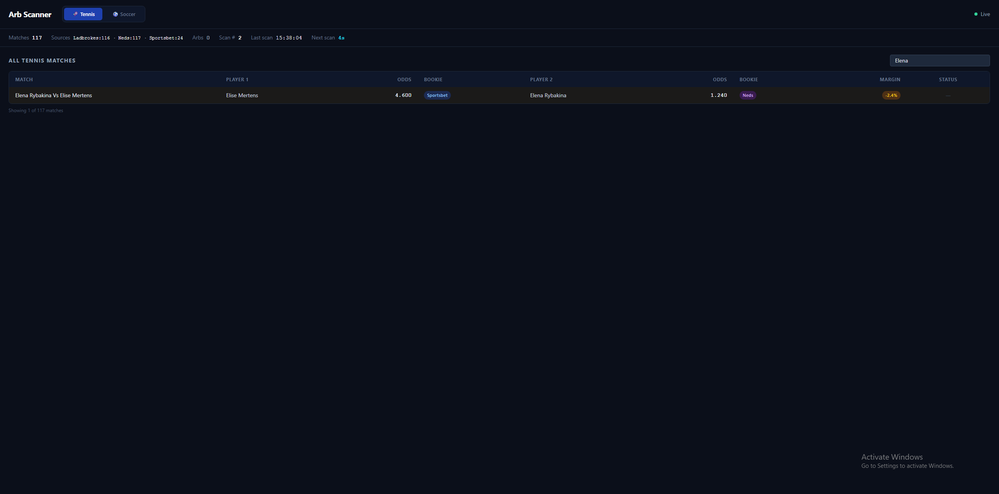

← Back to portfolio
Arb Checker
A tennis and soccer arbitrage scanner across Australian bookmakers (Bet365, Sportsbet, Ladbrokes, Neds) and the Betfair Exchange. Scrapes odds in parallel every 60 seconds, fuzzy-matches teams and players across sites, filters out bad/virtual data, and surfaces live arbs on a Flask web dashboard.


